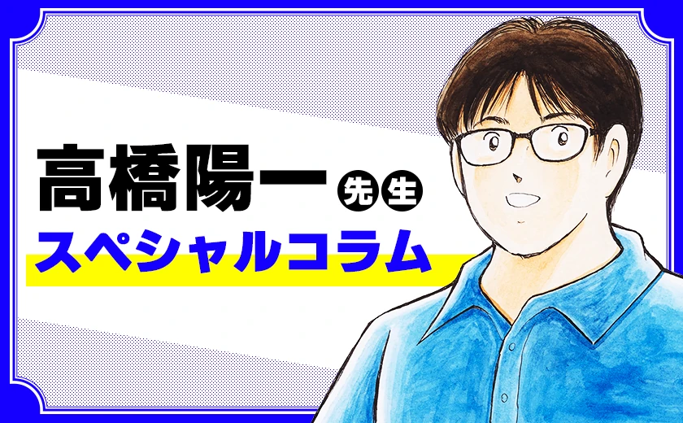

SPECIAL COLUMN高桥阳一特别专栏
Takahashi Yoichi Special Column
收录《队长小翼》原作者高桥阳一老师在官方网站连载的全部特别专栏。 从创作幕后、取材见闻，到世界杯观赛感想与生活随笔，均由日语原文完整翻译为中文。 上方标签中，ALL 为全部内容；COLUMN 为高桥阳一老师的专栏文章，INTERVIEW 为访谈长文。列表每 10 条为一页，底部可翻页。
该分类暂无内容。

SPECIAL COLUMNTakahashi Yoichi Special Column
收录《队长小翼》原作者高桥阳一老师在官方网站连载的全部特别专栏。 从创作幕后、取材见闻，到世界杯观赛感想与生活随笔，均由日语原文完整翻译为中文。 上方标签中，ALL 为全部内容；COLUMN 为高桥阳一老师的专栏文章，INTERVIEW 为访谈长文。列表每 10 条为一页，底部可翻页。
该分类暂无内容。